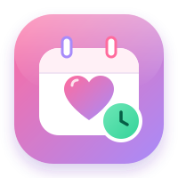

Estás sin conexión
La aplicación se guardará automáticamente. Vuelve a intentarlo cuando recuperes internet para sincronizar tus turnos con Firebase.
Intentar novamente
La aplicación se guardará automáticamente. Vuelve a intentarlo cuando recuperes internet para sincronizar tus turnos con Firebase.
Intentar novamente